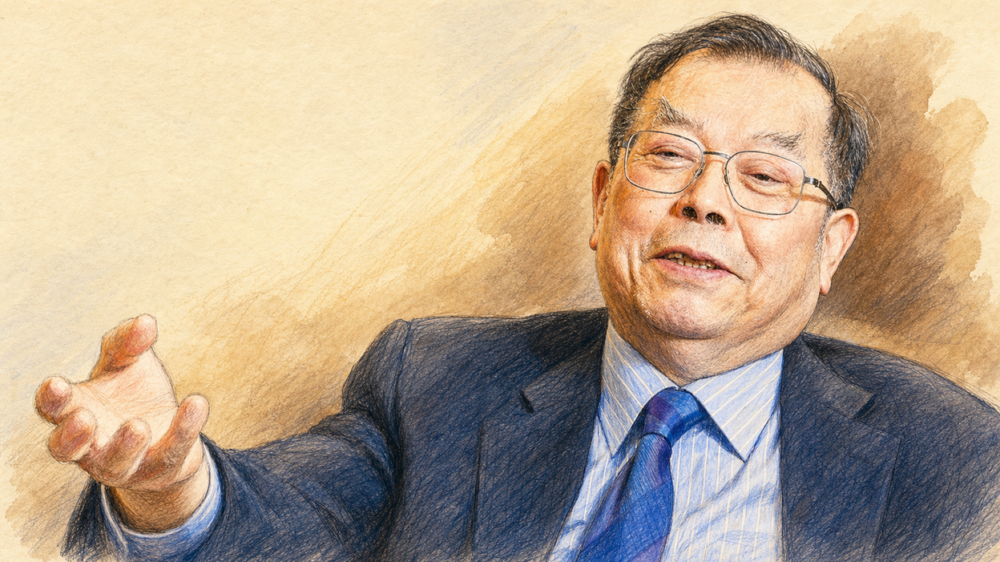

1971、1980從物理系到醫學博士
1971 年自台大物理系畢業，赴美取得醫學博士；1980 年返台後，任教於台北醫學院與台大。
學術養成
黃崇仁從學界跨進科技業，創辦力晶半導體；歷經 DRAM 景氣崩盤、公司下市與千億元債務，再以晶圓代工轉型，帶領力積電重返上市。
1971 年自台大物理系畢業，赴美取得醫學博士；1980 年返台後，任教於台北醫學院與台大。
學術養成離開學界投入台灣高科技產業，從電腦周邊與軟體領域展開創業生涯。
跨界創業與日本三菱電機合作成立力晶半導體；1996 年第一座 8 吋晶圓廠投產，正式跨入記憶體製造。
半導體起點先後出任台北市電腦公會、台灣半導體產業協會與世界半導體協會理事長。
產業角色全球 DRAM 供過於求、價格崩盤，力晶背負約 1,200 億元債務並下市，隨後從記憶體製造轉向晶圓代工。
事業谷底將台灣半導體製造資源整合為力晶積成電子製造，重建集團的公司架構與產業定位。
組織重整力積電在台灣證券交易所掛牌，完成從力晶下市危機到重返資本市場的近十年重整。
重返市場親自主持力積電法人說明會，說明記憶體、邏輯代工與 3D AI 晶圓代工三大業務方向。
晚年布局